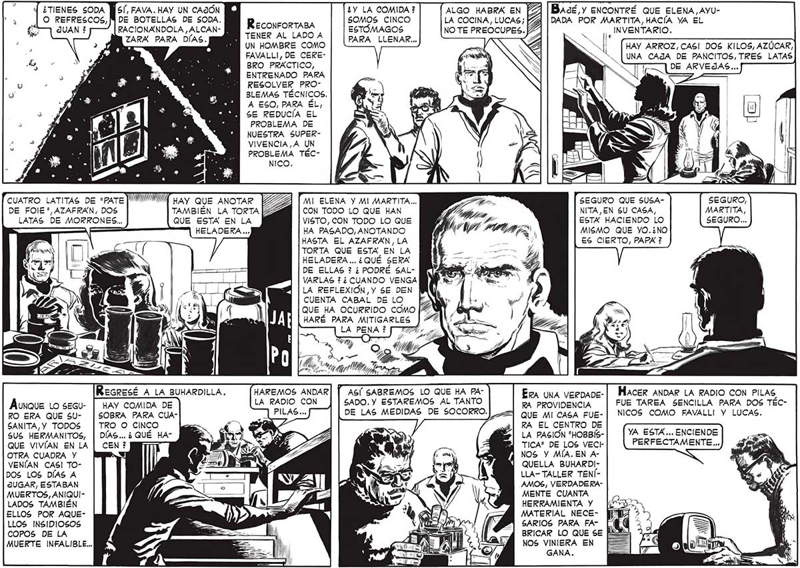

¿Y LA COMIDA ? 50MOS CINCO ESTÓMAGOS PARA LLENAR... BaodéÉ y ENCONTRÉ QUE ELENA, AYUDADA POR MARTITA, HACÍA YA EL ¡, INVENTARIO. HAY ARROZ,CAS! DOS KILOS, AZÚCAR, UNA CAJA DE PANCITOS, TRES LATAS ALGO HABRA EN LA COCINA, LUCAS; ReconrorTABA NO TE PREOCUPES. TENER AL LADO A UN HOMBRE COMO FAVALLI, DE CEREBRO PRÁCTICO, ENTRENADO PARA RESOLVER PROBLEMAS TÉCNICOS. A ESO, PARA ÉL; SE REDUCÍA EL PROBLEMA DE NUESTRA SUPERVIVENCIA,A UN PROBLEMA TÉCNICO. O REFRESCOS, [MY DE BOTELLAS DE SODA. de JUAN ? RACIONANDOLA ,ALCAN- : ZARXA PARA DIAS. SA TE SEGURO QUE SUSANITA,EN 5U CASA, ESTA HACIENDO LO MISMO QUE YO.¿NO ES CIERTO, PAPA ? CUATRO LATITAS DE "PATE| DE FOIE", AZAFRÁN, DOS LATAS DE MORRONES... HAY QUE ANOTAR TAMBIÉN LA TORTA QUE ESTA EN LA HELADERA ... MI ELENA Y MI MARTITA... CON TODO LO QUE HAN VISTO, CON TODO LO QUE HA PASADO, ANOTANDO HASTA EL AZAFRAN, LA TORTA QUE ESTA EN LA HELADERA... ¿QUÉ SERA DE ELLAS ? ¿ PODRÉ SALVARLAS ? ¿CUANDO VENGA LA REFLEXIOÓN,Y 5E DEN CUENTA CABAL DE LO | QUE HA OCURRIDO como [4 WN) . HARÉ PARA MITIGARLES ) 4711 ' LA PENA ? [777 (3) . SEGURO, MARTITA, SEGURO... ” ASÍ SABREMOS LO QUE HA PASADO. Y ESTAREMOS AL TANTO DE LAS MEDIDAS DE SOCORRO. HAREMOS ANDAR LA RADIO CON Exa una veenaoe- | HACER ANDAR LA RADIO CON PILAS RA PROVIDENCIA FUE TAREA SENCILLA PARA DOS TÉCQUE MI CASA FUE- NICOS COMO FAVALLI Y LUCAS. RA EL CENTRO DE LA PASION "HOBBISTICA" DE LOS VECINOS Y MÍA. EN AQUELLA BUHARDI!Áunauz Lo secu- | HAY COMIDA DE RO ERA QUE 5U- | SOBRA PARA CUASANITA, Y TODOS | TRO O CINCO SUS HERMANITOS, | DÍAS... ¿QUÉ HA” QUE VIVÍAN EN LA OTRA CUADRA Y VENÍAN CAS! TOYA ESTA... ENCIENDE PERFECTAMENTE... DOS LOS DÍAS A JUGAR, ESTABAN MUERTOS, ANIQUILADOS TAMBIÉN ELLOS POR AQUELLOS INSIDIOSOS COPOS DE LA MUERTE INFALIBLE... LLA- TALLER TENÍAMOS, VERDADERAMENTE CUANTA HERRAMIENTA Y MATERIAL NECEGSARIOS PARA FABRICAR LO QUE SE NOS VINIERA EN GANA.
